Candidate List 20260614 Previous Day Next Day Section 1: New Sources (age<1d) Cosmological Afterglow
Section 2: Old (1-5d) sources observed last night placeholder
Section 1: New Afterglow/FBOT Cands Last Night (0)
Section 2: Older Sources Observed Last Night (16)
0. ZTF26abarcrv (Afterglow?FBOT?) [Back to Top] [Share] [Trigger Swift] [Fritz ] [Lasair ]RA, Dec: 275.07786, 77.79911 18h20m18.69s, 77d47m56.78sGalactic (l, b): 109.19915, 28.10906 ext(g-r) = 0.068peak abs mag = -19.24 LegacySurvey: 1 sources in 3 arcsec Closest: d = 3.09 arcsec, 290.4 deg (east of north) photoz=0.18 (68% bounds 0.05, 0.43), type=REX peak abs mag = -20.69 (68% bounds -17.65, -22.84) Consistent with synchrotron, g-r>0!
1. ZTF26abaxjou (FBOT?) [Back to Top] [Share] [Trigger Swift] [Fritz ] [Lasair ]RA, Dec: 196.93416, 8.98514 13h 7m44.20s, 8d59m6.52sGalactic (l, b): 315.67871, 71.45239 ext(g-r) = 0.031peak abs mag = -21.46 LegacySurvey: 1 sources in 3 arcsec Closest: d = 0.35 arcsec, 13.6 deg (east of north) photoz=0.33 (68% bounds 0.28, 0.4), type=SER peak abs mag = -21.85 (68% bounds -21.44, -22.31)
2. ZTF26abbdkwn (FBOT?) [Back to Top] [Share] [Trigger Swift] [Fritz ] [Lasair ]RA, Dec: 249.783, 0.57425 16h39m7.92s, 0d34m27.29sGalactic (l, b): 16.95339, 29.35792 ext(g-r) = 0.112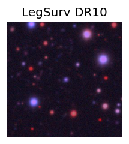
peak abs mag = -20.97 LegacySurvey: 1 sources in 3 arcsec Closest: d = 0.76 arcsec, 248.9 deg (east of north) photoz=0.12 (68% bounds 0.1, 0.15), type=REX peak abs mag = -19.04 (68% bounds -18.62, -19.63) Consistent with synchrotron, g-r>0!
3. ZTF26abbgihv (Afterglow?) [Back to Top] [Share] [Trigger Swift] [Fritz ] [Lasair ]RA, Dec: 292.47011, 5.15903 19h29m52.83s, 5d 9m32.50sGalactic (l, b): 41.95003, -6.14131 ext(g-r) = 0.484PS1: 1 source in 3 arcsec Closest: d = 2.32 arcsec photoz=0.34+/-0.19 peak abs mag = -24.54
4. ZTF26abbjayz (Afterglow?) [Back to Top] [Share] [Trigger Swift] [Fritz ] [Lasair ]RA, Dec: 280.52866, -11.28661 18h42m6.88s, -11d-17m-11.80sGalactic (l, b): 21.82445, -3.08106 ext(g-r) = 0.84
5. ZTF26abbkufc (FBOT?) [Back to Top] [Share] [Trigger Swift] [Fritz ] [Lasair ]RA, Dec: 212.52168, 0.58456 14h10m5.20s, 0d35m4.42sGalactic (l, b): 341.61012, 57.42674 ext(g-r) = 0.039peak abs mag = -19.95 LegacySurvey: 1 sources in 3 arcsec Closest: d = 0.46 arcsec, 172.6 deg (east of north) photoz=0.12 (68% bounds 0.1, 0.15), type=REX peak abs mag = -19.02 (68% bounds -18.58, -19.6)
6. ZTF26abbkvuf (FBOT?) [Back to Top] [Share] [Trigger Swift] [Fritz ] [Lasair ]RA, Dec: 198.78244, -2.16855 13h15m7.79s, -2d-10m-6.79sGalactic (l, b): 314.88949, 60.152 ext(g-r) = 0.027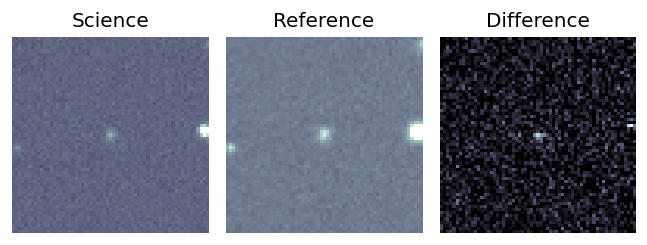
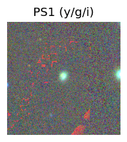
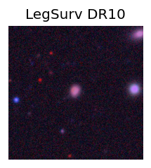
peak abs mag = -19.47 LegacySurvey: 1 sources in 3 arcsec Closest: d = 0.88 arcsec, 22.2 deg (east of north) photoz=0.28 (68% bounds 0.2, 0.32), type=SER peak abs mag = -20.65 (68% bounds -19.89, -20.98) 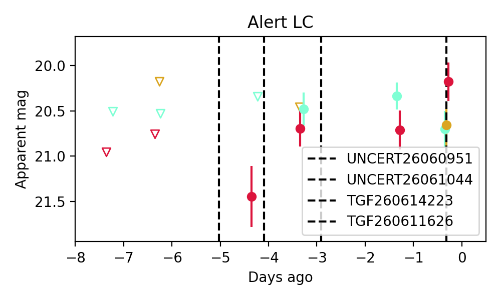
Consistent with synchrotron, g-r>0!
7. ZTF26abbmcve (Afterglow?) [Back to Top] [Share] [Trigger Swift] [Fritz ] [Lasair ]RA, Dec: 276.20661, 10.67227 18h24m49.59s, 10d40m20.19sGalactic (l, b): 39.53003, 10.70597 ext(g-r) = 0.2PS1: 1 source in 3 arcsec Closest: d = 3.45 arcsec photoz=0.49+/-0.17 peak abs mag = -23.92
8. ZTF26abbqcsq (Afterglow?FBOT?) [Back to Top] [Share] [Trigger Swift] [Fritz ] [Lasair ]RA, Dec: 186.16337, 12.01109 12h24m39.21s, 12d 0m39.94sGalactic (l, b): 279.06337, 73.62895 ext(g-r) = 0.027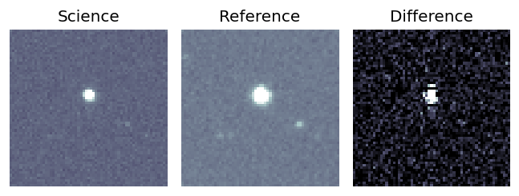
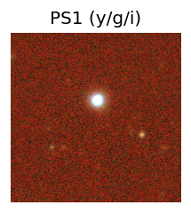
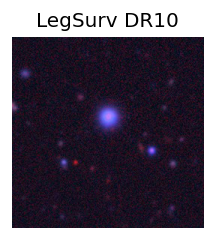
LegacySurvey: 1 sources in 3 arcsec Closest: d = 5.57 arcsec, 357.3 deg (east of north) photoz=0.06 (68% bounds 0.01, 0.33), type=PSF peak abs mag = -21.03 (68% bounds -17.15, -24.9) 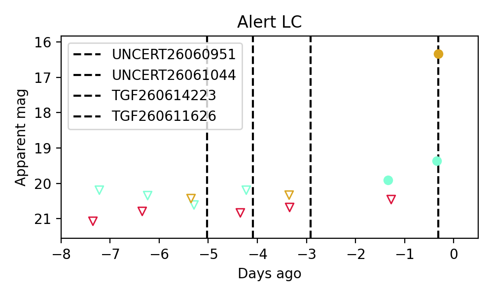
Consistent with synchrotron, g-r>0!
9. ZTF26abbrzps (FBOT?) [Back to Top] [Share] [Trigger Swift] [Fritz ] [Lasair ]RA, Dec: 255.79612, 9.20653 17h 3m11.07s, 9d12m23.51sGalactic (l, b): 28.8717, 28.20717 ext(g-r) = 0.104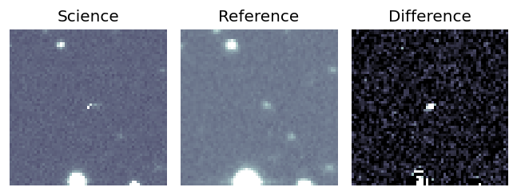
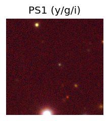
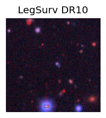
LegacySurvey: 1 sources in 3 arcsec Closest: d = 1.70 arcsec, 51.3 deg (east of north) photoz=0.99 (68% bounds 0.6, 1.46), type=PSF peak abs mag = -24.89 (68% bounds -23.55, -25.91) 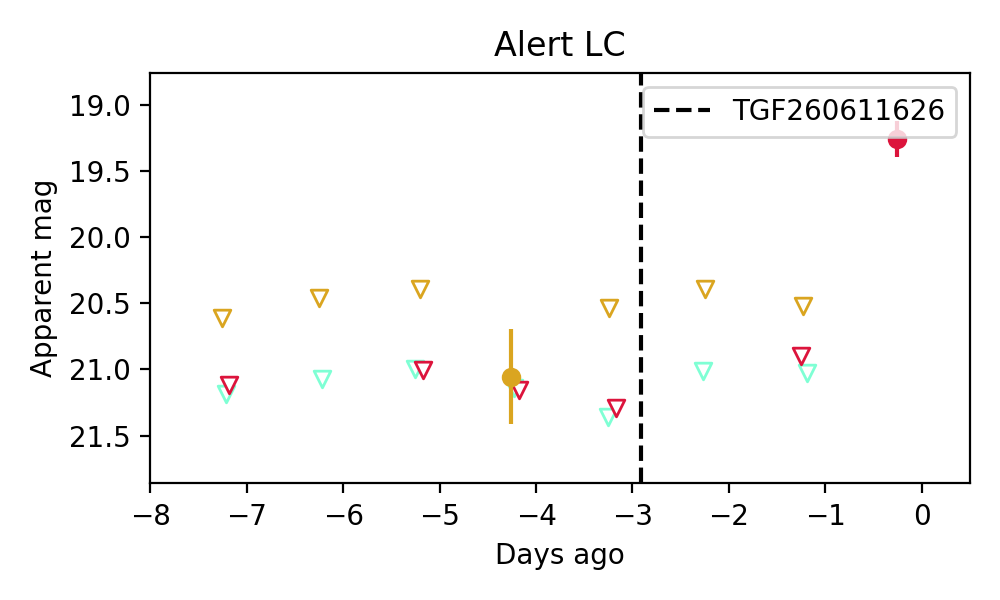
10. ZTF26abbrzts (FBOT?) [Back to Top] [Share] [Trigger Swift] [Fritz ] [Lasair ]RA, Dec: 260.30859, 37.57778 17h21m14.06s, 37d34m40.00sGalactic (l, b): 61.83862, 33.2694 ext(g-r) = 0.049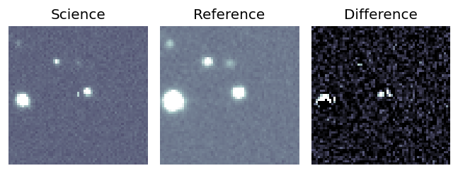
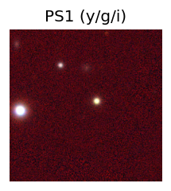
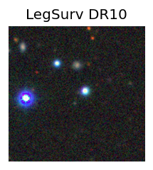
LegacySurvey: 1 sources in 3 arcsec Closest: d = 0.84 arcsec, 294.6 deg (east of north) photoz=0.96 (68% bounds 0.7, 1.19), type=PSF peak abs mag = -23.93 (68% bounds -23.11, -24.51) 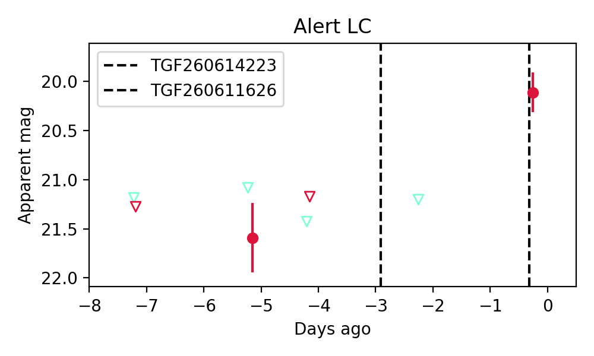
11. ZTF26abbsava (Afterglow?) [Back to Top] [Share] [Trigger Swift] [Fritz ] [Lasair ]RA, Dec: 251.17288, 48.51169 16h44m41.49s, 48d30m42.08sGalactic (l, b): 74.95653, 40.63725 ext(g-r) = 0.022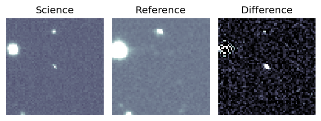
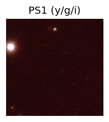
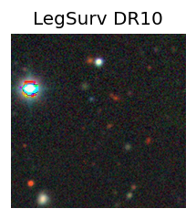
peak abs mag = -15.85 LegacySurvey: 1 sources in 3 arcsec Closest: d = 3.95 arcsec, 351.1 deg (east of north) photoz=0.93 (68% bounds 0.79, 1.1), type=REX peak abs mag = -24.84 (68% bounds -24.4, -25.27) 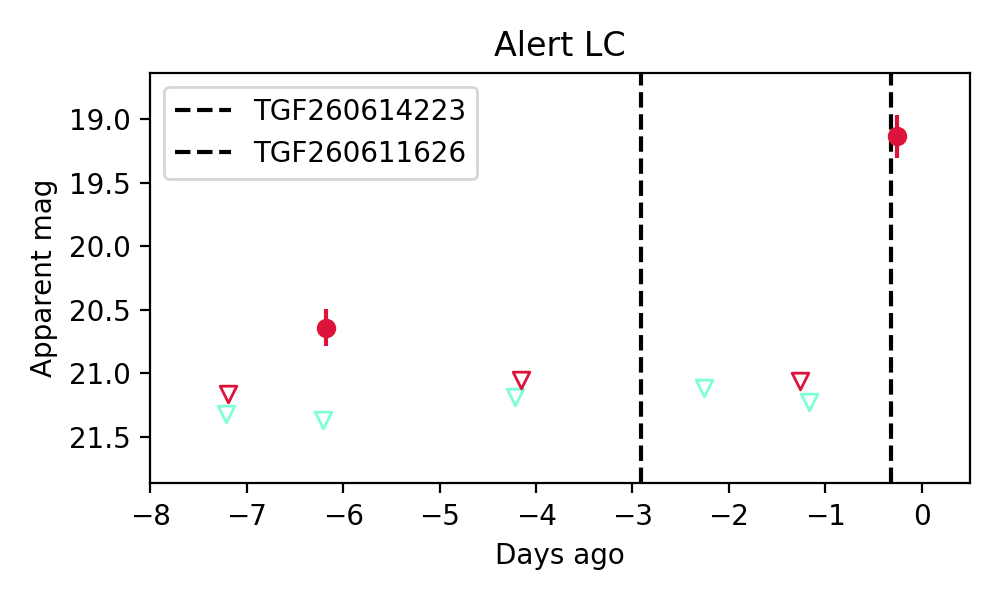
12. ZTF26abbsmsb (FBOT?) [Back to Top] [Share] [Trigger Swift] [Fritz ] [Lasair ]RA, Dec: 221.72904, 8.10855 14h46m54.97s, 8d 6m30.79sGalactic (l, b): 3.49037, 56.71026 ext(g-r) = 0.031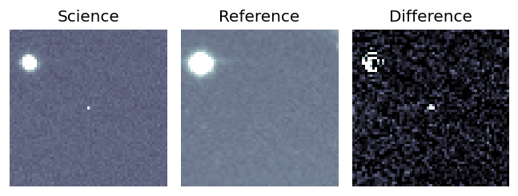
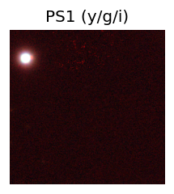
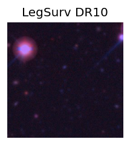
peak abs mag = -23.74 LegacySurvey: 1 sources in 3 arcsec Closest: d = 0.45 arcsec, 164.7 deg (east of north) photoz=1.35 (68% bounds 0.77, 2.11), type=REX peak abs mag = -25.58 (68% bounds -24.07, -26.77) 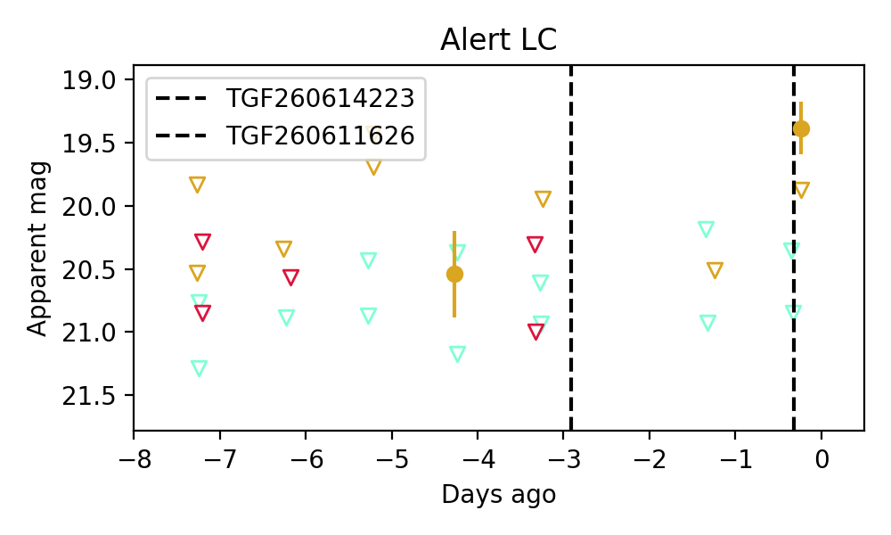
13. ZTF26abbstzv (FBOT?) [Back to Top] [Share] [Trigger Swift] [Fritz ] [Lasair ]RA, Dec: 248.60766, 25.4739 16h34m25.84s, 25d28m26.03sGalactic (l, b): 44.37834, 40.41607 ext(g-r) = 0.033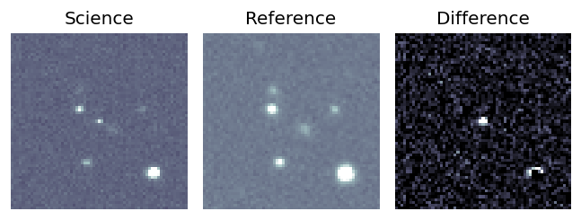
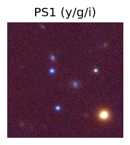
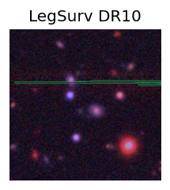
peak abs mag = -22.43 LegacySurvey: 1 sources in 3 arcsec Closest: d = 3.01 arcsec, 242.3 deg (east of north) photoz=0.33 (68% bounds 0.21, 0.51), type=EXP peak abs mag = -21.5 (68% bounds -20.38, -22.6) 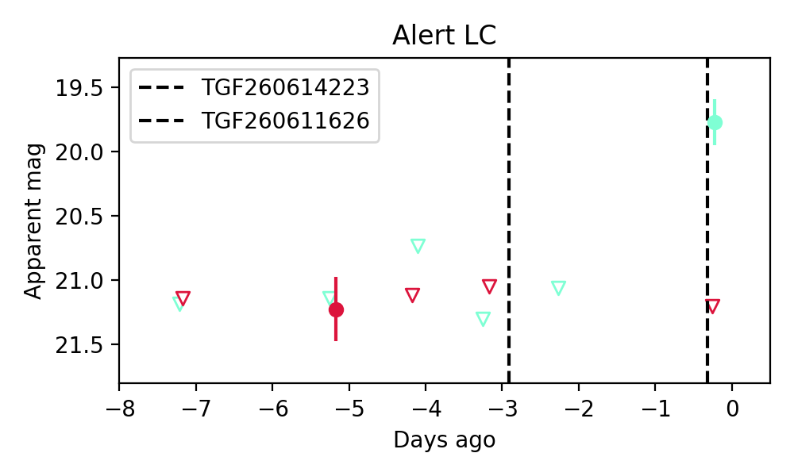
14. ZTF26abbubin (FBOT?) [Back to Top] [Share] [Trigger Swift] [Fritz ] [Lasair ]RA, Dec: 278.92018, 29.46769 18h35m40.84s, 29d28m3.70sGalactic (l, b): 58.23013, 16.11376 ext(g-r) = 0.258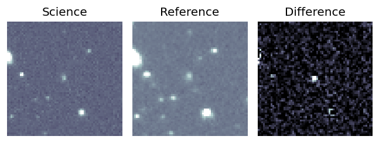
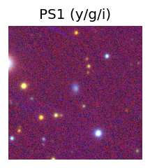
PS1: 1 source in 3 arcsec Closest: d = 1.44 arcsec photoz=0.15+/-0.12 peak abs mag = -19.85 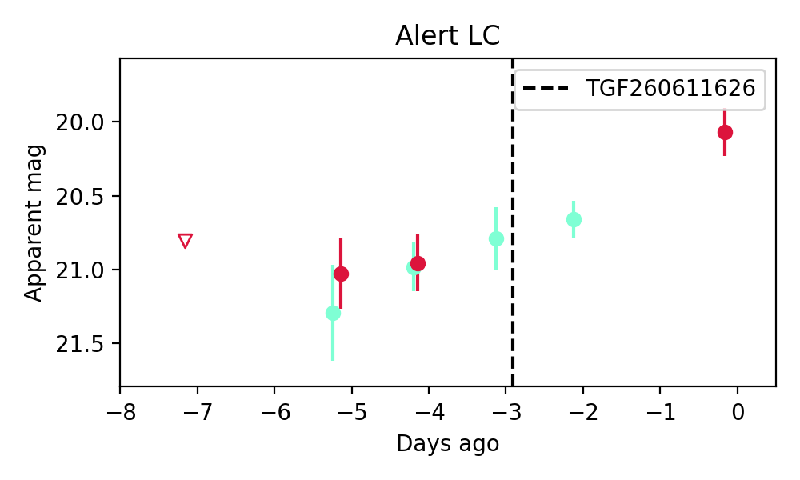
Consistent with synchrotron, g-r>0!
15. ZTF26abbudwr (FBOT?) [Back to Top] [Share] [Trigger Swift] [Fritz ] [Lasair ]RA, Dec: 302.74393, 55.99958 20h10m58.54s, 55d59m58.50sGalactic (l, b): 90.4043, 12.04926 ext(g-r) = 0.416PS1: 1 source in 3 arcsec Closest: d = 0.95 arcsec photoz=0.34+/-0.05 peak abs mag = -22.17 Consistent with synchrotron, g-r>0!